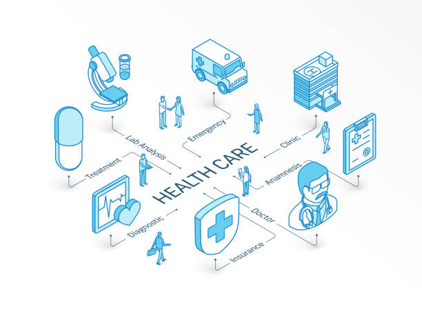

This was a unique project because,the project focuses on analyzing and redesigning Health’s manual,
first-in-first-out remote patient monitoring alert-triage workflow.
Using Business Analysis and Lean methodologies supported by Fishbone Diagrams, 5 Whys, Impact-Effort Matrices,
FHIR APIs, EHR integration, automated clinical decision support (CDS) rules engines, and real-time BI/operational
SLA dashboards it establishes risk-based alert scoring, live SLA timers,
automated escalation pathways, and instant patient history retrieval while maintaining clinician oversight. Ultimately,
the solution aims to reduce high-priority SLA breaches from 15% to under 2%, cut non-actionable alerts to 30% or less,
lower annual cost-to-serve by €39 per patient (projecting ~€858,000 in savings),
and protect a €9.5 million commercial renewal...


The Health system needed a Healthtech Business Analyst because its alert-triage operations were struggling to keep pace with patient growth, creating operational, clinical, and commercial risks: Rising SLA Breaches: About 15% of high-priority alerts were missing the 30-minute Service Level Agreement (SLA) High Alert Fatigue & Wasted Effort: Roughly 62% of incoming alerts were non-actionable, forcing coordinators to spend valuable time reviewing false positives and manually searching across separate EHR systems and spreadsheets for patient history. Unsustainable Cost to Serve: The manual, repetitive nature of the workflow drove the annual cost to serve up to about €130 per patient roughly €39 higher. Commercial Revenue at Risk: Operational performance issues placed a major €9.5 million Nordkasse contract renewal at risk.
This project lacks Interoperability between Electronic Health Record (EHRs).
Patients information is often stored across multiple healthcare systems that cannot ommunicate effectively.AS A RESULT Clinicians may not have completed patient records,Duplicate tests and procedures occur, care cordination suffers,Medical errors may increase
Healthcare organisations face inefficiencies
.